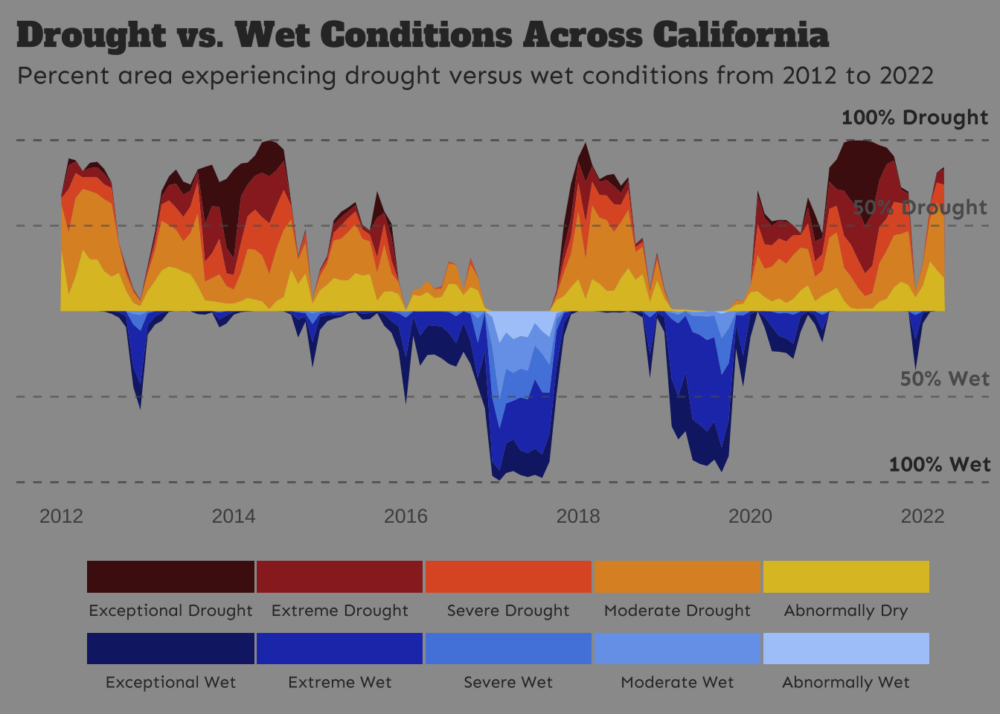
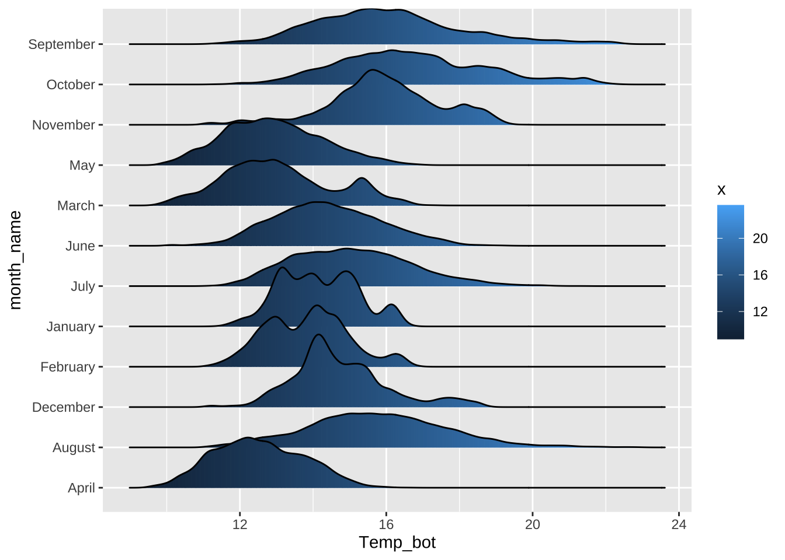
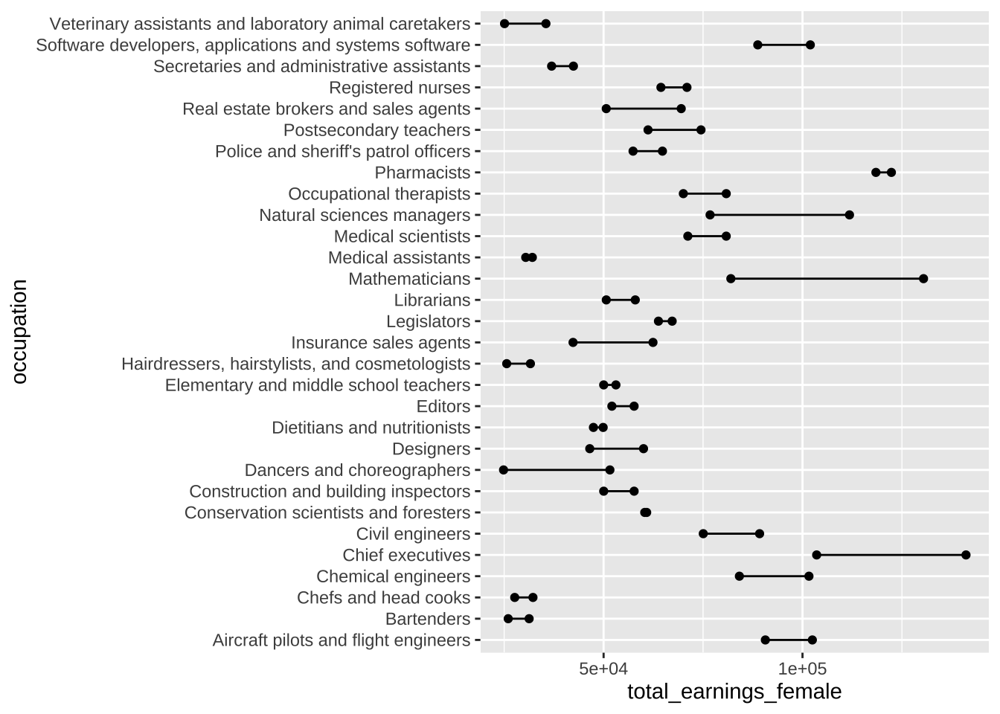
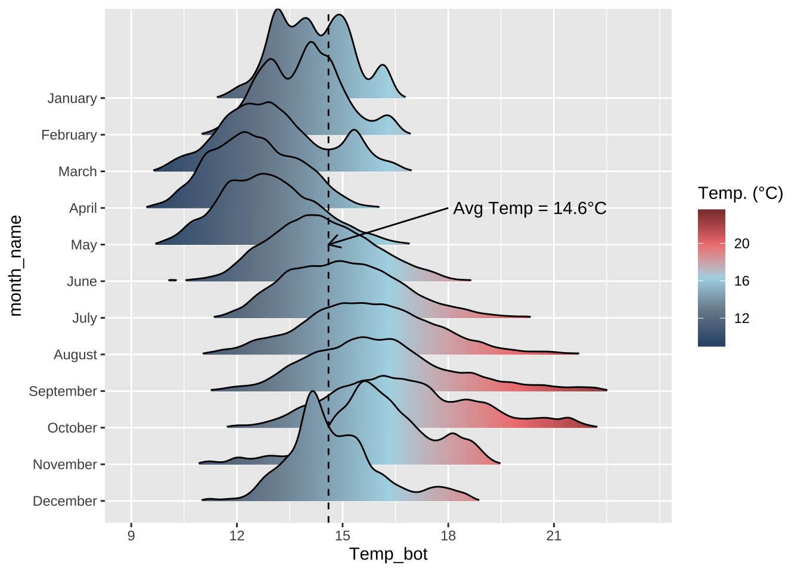
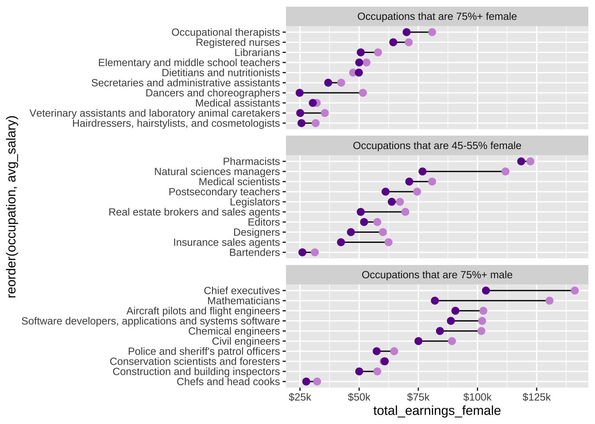
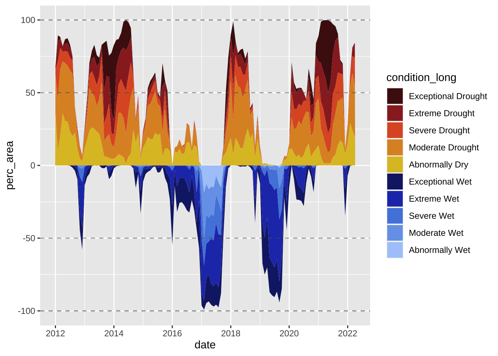
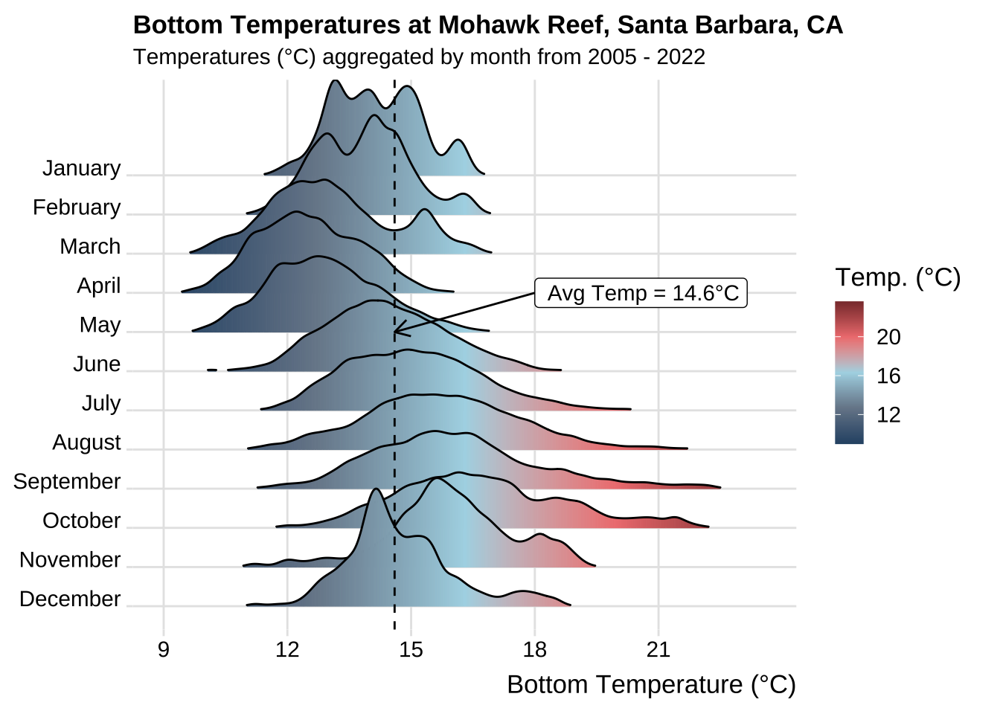
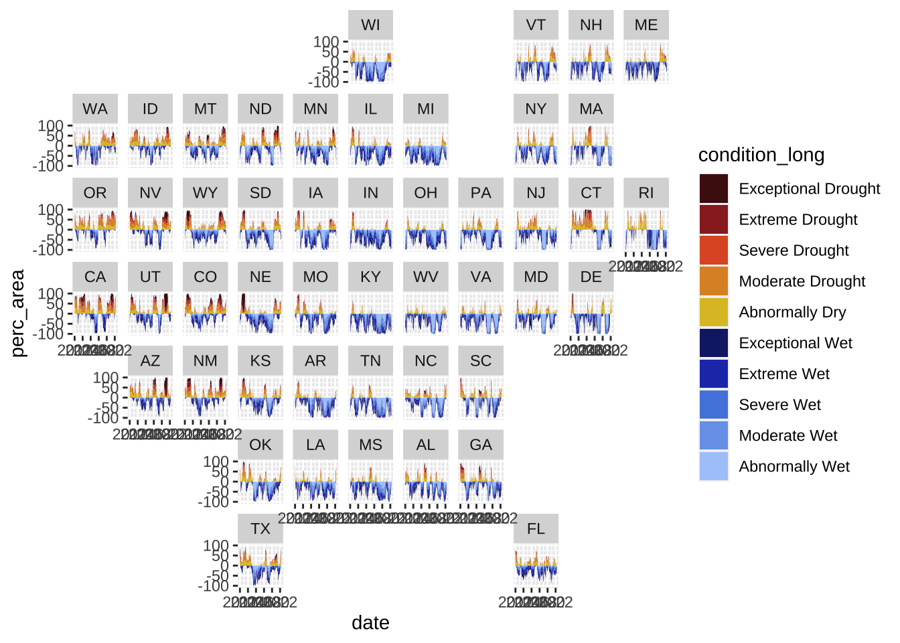
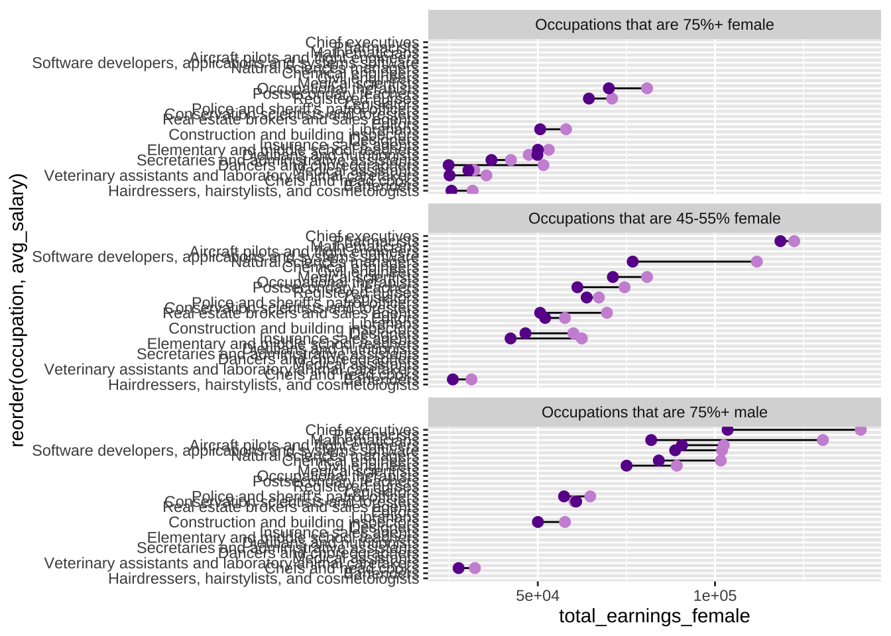

One workflow for building effective (and pretty) {ggplot2} data visualizations

{ggplot2} has, in many ways, become the de facto tool for data visualization in R. And with the many extension packages available, there’s hardly a limit to what you can create. Building effective and visually-pleasing data visualizations is a skill that gets easier with practice, and following a somewhat structured workflow – at least at the start – can help you get there faster. This workshop covers one approach for doing so, though you’ll find what works best for you with time.
Below, you’ll find three different examples, beginning with an assessment of the raw data and ending with a completed visualization. Here’s a sneak peak of what we’ll be creating:
This ocean temperatures plot explores the following tools & approaches:
- a ggplot extension package,
{ggridges}, to create a ridge line plot - styling a plot with a pre-built theme
- adding an annotation layer

This wages plot explores the following tools and approaches:
- facet wrapping panels by groups of data
- the
{scales}package for modifying axis labels - the
{ggtext}package for applying css styling to plot text - modifying components of a plot’s theme

This drought plot explores the following tools & approaches:
- the
{cowplot}package for adding annotations - the
{showtext}package for loading & applying Google fonts - modifying (even more) components of a plot’s theme
There are many ways to create the same visualization!
It’s important to remember that there are lots of different tools, packages, and approaches for building similarly-looking plots. My approach may not be what makes most intuitive sense to you – I encourage you to explore documentation and additional examples!
If you need a high-level {ggplot2} review and/or a reminder of important considerations for building responsible data visualizations, take a look back at Allison Horst’s lectures 15 and 16 from EDS 221.
Step 1. What data type(s)?
In order to determine the most appropriate and effective chart type, you first need to determine what type(s) of data you’re working with.
Let’s say we’re interested in visualizing temporal variation in bottom temperature at Mohawk Reef (Santa Barbara, CA), a near-shore rocky reef and one of the Santa Barbara Coastal (SBC) LTER research sites. To do so, we’ll use SBC LTER data, SBC LTER: Ocean: Currents and Biogeochemistry: Moored CTD and ADCP data from Mohawk Outside Spar (MKO), ongoing since 2005, available for download on the EDI Data Portal.
Warning: Large data file!
Do not attempt to push raw data to GitHub – adding your raw-data/ folder (or equivalent) to your .gitignore is highly recommmended. You may download the cleaned mohawk_cleaned.rds file here.
The raw data file contains 87 variables and >473,000 observations across 18 years (2005 - 2022) (data have been interpolated to a 20 min interval) – cleaning involves selecting only variables of interest, coercing variables to the appropriate data type, adding month abbreviations, and assessing missing data (find the cleaning script here).
Below are 10 randomly sampled rows from our cleaned data:
#..........................load packages.........................
library(tidyverse)
#......................read in cleaned data......................
mko_clean <- readRDS(here::here("clean-data", "mohawk_temps.rds"))
#....................randomly sample 10 rows.....................
set.seed(123)
(random_mko_sample <- dplyr::slice_sample(mko_clean, n = 10))# A tibble: 10 × 8
date_time year month day month_name Temp_bot Temp_mid Temp_top
<dttm> <fct> <fct> <dbl> <fct> <dbl> <dbl> <dbl>
1 2021-12-01 20:39:59 2021 12 1 December 15.5 15.7 15.7
2 2012-03-09 04:20:04 2012 03 9 March 10.3 10.5 10.9
3 2010-02-05 21:40:02 2010 02 5 February 14.7 14.7 14.6
4 2009-09-19 12:20:01 2009 09 19 September NA NA NA
5 2011-02-15 01:20:04 2011 02 15 February 13.2 13.5 13.6
6 2013-08-10 07:00:03 2013 08 10 August NA 15.4 NA
7 2018-11-21 07:59:57 2018 11 21 November 18.3 18.3 18.3
8 2009-09-26 06:00:00 2009 09 26 September NA NA NA
9 2022-07-20 19:59:57 2022 07 20 July NA NA NA
10 2012-05-13 06:00:00 2012 05 13 May 12.5 13.0 13.1We are working with both numeric data (bottom temperature, Temp_bot) and categorical data (months, month). Further we have several (well, many) observations per group (month).
In honor of Women’s History Month we’ll be using the #tidytuesday Women in the Workforce data set (posted on March 5, 2019) to explore differences in salaries between males and females across occupations.
The original jobs_gender.csv data file (as posted on the tidytuesday GitHub repo) contains 12 variables and >2,000 observations – each row represents a different occupation and associated wage and employment statistics for the years 2013 - 2016. Cleaning involves removing occupations with missing salary data and calculating some additional values (average salary for males and females by occupation, the percentage of males for each occupation type, difference in salary between males and females by occupation). Two cleaned data sets are available: all_jobs.rds (contains all occupations with wage data from the original data set, across all available years) and select_jobs.rds (contains 10 occupations from each of the following categories: occupations that are 75%+ women, 45-55% women, and 75%+ men, for the year 2016 only), which we’ll use for plotting below. Find the cleaning script here.
TidyTuesday provides “tamed”, but not fully wrangled data
Learn more about the original data, courtesy of the Census Bureau, by checking out the tidytuesday GitHub repo.
Below are 10 randomly sampled rows from our cleaned data (select_jobs.rds):
#..........................load packages.........................
library(tidyverse)
#......................read in cleaned data......................
select_jobs <- readRDS(here::here("clean-data", "select_jobs.rds"))
#....................randomly sample 10 rows.....................
set.seed(123)
(random_jobs_sample <- dplyr::slice_sample(select_jobs, n = 10))# A tibble: 10 × 17
year major…¹ minor…² occup…³ total…⁴ worke…⁵ worke…⁶ perce…⁷ perce…⁸ total…⁹
<dbl> <chr> <chr> <chr> <dbl> <dbl> <dbl> <dbl> <dbl> <dbl>
1 2016 Educat… Arts, … Editors 125387 64120 61267 51.1 48.9 55140
2 2016 Health… Health… Regist… 2317493 281048 2036445 12.1 87.9 65331
3 2016 Educat… Arts, … Dancer… 6556 1468 5088 22.4 77.6 31342
4 2016 Manage… Manage… Natura… 17916 8464 9452 47.2 52.8 92161
5 2016 Educat… Educat… Postse… 881345 470888 410457 53.4 46.6 67145
6 2016 Health… Health… Occupa… 72099 9813 62286 13.6 86.4 70679
7 2016 Service Protec… Police… 669550 582716 86834 87.0 13.0 62852
8 2016 Educat… Educat… Elemen… 2398445 530970 1867475 22.1 77.9 50659
9 2016 Comput… Comput… Mathem… 1288 1035 253 80.4 19.6 121912
10 2016 Service Health… Medica… 382920 35341 347579 9.23 90.8 30549
# … with 7 more variables: total_earnings_male <dbl>,
# total_earnings_female <dbl>, difference_earnings_male_female <dbl>,
# wage_percent_of_male <dbl>, avg_salary <dbl>, perc_group <fct>,
# perc_group_label <fct>, and abbreviated variable names ¹major_category,
# ²minor_category, ³occupation, ⁴total_workers, ⁵workers_male,
# ⁶workers_female, ⁷percent_male, ⁸percent_female, ⁹total_earningsWe are working with categorical data (occupations, occupation), and numeric data ($ earned by men and women in a given occupation, total_earnings_male & total_earnings_female).
For this example, we’ll be using the #tidytuesday Drought Conditions in the US data set (posted on June 14, 2022) to explore drought and wet conditions in the state of California through time.
TidyTuesday provides “tamed”, but not fully wrangled data
Learn more about the original data, courtesy of US Drought Monitor, by checking out the tidytuesday GitHub repo.
The original drought.csv data file (as posted on the tidytuesday GitHub repo) contains 14 variables and >73,000 observations. Weekly assessments of drought & wet conditions are made for each US state (and the District of Columbia) between 1895 - 2022 and reported as percent land area falling into each Drought Classification Category. Cleaning involves formatting dates and state names, converting drought classification categories and associated area percentages from wide to long format, and filtering for years of interest (2012 - 2022) (find the cleaning script here).
Below are the first 12 rows from our cleaned data:
#......................read in cleaned data......................
drought_clean <- readRDS(here::here("clean-data", "us_drought.rds"))
#..................print first 12 rows of data...................
head(drought_clean, 12)# A tibble: 12 × 7
date year state_abb state_name condition condition_long perc_area
<date> <dbl> <chr> <chr> <chr> <fct> <dbl>
1 2012-01-01 2012 AL Alabama D0 Abnormally Dry 12.9
2 2012-01-01 2012 AL Alabama D1 Moderate Drought 20.1
3 2012-01-01 2012 AL Alabama D2 Severe Drought 15.3
4 2012-01-01 2012 AL Alabama D3 Extreme Drought 6.9
5 2012-01-01 2012 AL Alabama D4 Exceptional Drought 0
6 2012-01-01 2012 AL Alabama W0 Exceptional Wet 5.7
7 2012-01-01 2012 AL Alabama W1 Extreme Wet 5.1
8 2012-01-01 2012 AL Alabama W2 Severe Wet 2.4
9 2012-01-01 2012 AL Alabama W3 Moderate Wet 1.4
10 2012-01-01 2012 AL Alabama W4 Abnormally Wet 0
11 2012-02-01 2012 AL Alabama D0 Abnormally Dry 15.2
12 2012-02-01 2012 AL Alabama D1 Moderate Drought 23.8Let’s say we’re interested in exploring trends in California drought and wet conditions from 2012 - 2022. We’ll be working with one categorical variable (condition, condition_long), one numeric variable (percent area impacted, perc_area) and one ordered numeric variable (year, year).
Step 2. What visualization type?

Next, decide what visualization type(s) is most appropriate given your data type(s).
From Data to Viz (in my opinion) the best place to start when answering this question – use the decision tree to explore chart options based on your data type(s).
Click on a particular chart type in the From Data to Viz decision tree to find:
- a definition and examples(s)
- a description of what that chart type is used for
- common variations on that chart type
- common mistakes (and how to avoid them)
- related chart types (i.e. others that you might also consider using for your given data type(s))
- links to the R graph gallery and Python gallery with many different examples of that chart type + code so that you can learn how to create your own
This is seriously such an invaluable resource, and I highly recommend turning to it often!!!
We’re presented with a few great options (boxplot, violin plot, ridgeline plot, density plot, histogram) given our data. I’m partial to the ridgeline plot – I find it an intuitive way to view changes in temperature distributions through time, so that’s what I’ll choose for this example:

We’re presented with a few great options (grouped barplot, grouped scatter plot, lollipop plot) given our data. Dumbbell plots, also called Cleveland plots are a variant of the lollipop plot, which allow for comparison of two numeric values (in our case, male vs. female salaries) for each group (occupation), so that’s what I’ll choose for this example (plus, I was eager to try replicating a similar graphic by the US Census Bureau, shared by Thomas Mock in the TidyTuesday data set introduction tweet).
We’re presented with a few options (line plot, stacked area chart, streamgraph) given our data. Stacked area plots are useful for displaying the evolution of the value of several groups on the same graphic (in our case, the evolution of perc_area for each condition group), so that’s what I’ll choose for this example:

Stacked area plots should be used with caution.
They are appropriate for studying the evolution of the whole (e.g. all drought categories through time) and the relative proportions of each group, but not for studying the evolution of each group – it’s very difficult to subtract the height of other groups at any given time point to calculate the value for a group of interest.
Step 3. Create a basic plot
Let’s start by creating a super basic ridgeline plot of aggregate bottom temperatures by month using geom_density_ridges_gradient() from the {ggridges} package:
#..........................load packages.........................
library(tidyverse)
library(ggridges)
#..........................read in data..........................
mko_clean <- readRDS(here::here("clean-data", "mohawk_temps.rds"))
#..............................plot..............................
mko_ridges_plot <- mko_clean |>
# group by month ----
group_by(month_name) |>
# intialize ggplot ----
ggplot(aes(x = Temp_bot, y = month_name, fill = after_stat(x))) +
# create ridgeline plot ----
ggridges::geom_density_ridges_gradient()
mko_ridges_plot
Let’s start by creating a super basic dumbbell plot of male vs. female salaries by occupation (using the select_jobs.rds file, though feel free to explore other occupations using all_jobs.rds on your own) – we’ll do this using geom_segment() to create the line connecting our points and geom_point() to create the points representing male and female salaries:
#..........................load packages.........................
library(tidyverse)
#..........................import data...........................
# use this dataset if you want to explore all occupations included in the original TidyTuesday dataset
# all_jobs <- readRDS(here::here("clean-data", "all_jobs.rds"))
# filtered data for plotting (original data contains too many occupations to plot at once)
# includes only 10 occupations from each of the following categories (occupations that are 75%+ women, 45-55% women, and 75%+ men)
select_jobs <- readRDS(here::here("clean-data", "select_jobs.rds"))
#..............................plot..............................
# initialize ggplot ----
earnings_plot <- ggplot(select_jobs) +
# create dumbbells ----
geom_segment(aes(x = occupation, xend = occupation, y = total_earnings_female, yend = total_earnings_male)) +
geom_point(aes(x = occupation, y = total_earnings_male)) +
geom_point(aes(x = occupation, y = total_earnings_female))
earnings_plot
Let’s start by creating a super basic stacked area plot of percent area by condition category through time for California only, using geom_area(). Inspired by a number of #tidytuesday submissions (I searched #tidytuesday drought on Twitter; see those by @sponce1, @KittJonathan @BlakeRobMills, @leeolney3, @neilgcurrie, @Topenomics), I want to display my drought conditions as positive values and wet conditions as negative values. To do so, we’ll need to multiply all wet category values by -1:
#..........................load packages.........................
library(tidyverse)
#..........................read in data..........................
drought_clean <- readRDS(here::here("clean-data", "us_drought.rds"))
#..............................plot..............................
ca_plot <- drought_clean |>
# filter for CA ----
filter(state_abb == "CA") |>
# make wet condition values negative by multiplying by -1 ----
mutate(perc_area = ifelse(test = grepl("D", condition) == T, yes = perc_area, no = perc_area * -1)) |>
# initialize ggplot ----
ggplot(aes(x = date, y = perc_area, fill = condition_long)) +
# create stacked area chart ----
geom_area()
ca_plot
Step 4. Improve clarity & take-home message(s)
We’ve successfully plotted our temperature data, but we’ll want to update the following so that our visualization is easier to interpret:
- order months chronologically
- apply an intuitive color gradient scale
We might also choose to:
- highlight a particular benchmark temperature(s) (e.g. the average bottom temperature across our data set) – adding a vertical line and annotations is a great option for this
- explore
geom_density_ridges_gradient()argument options to modify the appearance of our ridges
#..........................load packages.........................
library(tidyverse)
library(ggridges)
#..........................read in data..........................
mko_clean <- readRDS(here::here("clean-data", "mohawk_temps.rds"))
#.......................calculate avg temp.......................
mko_avg <- mko_clean |>
summarize(mean_temp = round(mean(Temp_bot, na.rm = TRUE), 1)) |>
pull()
#..............................plot..............................
mko_ridges_plot <- mko_clean |>
group_by(month_name) |>
# initialize ggplot ----
ggplot(aes(x = Temp_bot, y = month_name, fill = after_stat(x))) +
# create ridgeline plot ----
ggridges::geom_density_ridges_gradient(rel_min_height = 0.01, scale = 3) + # rel_min_height cuts trailing tails (0.01 suggested); scale sets extent of overlap
# add vertical line at avg temp + annotation ----
geom_vline(xintercept = mko_avg, linetype = "dashed", color = "black") +
annotate(geom = "segment", x = 18, y = "April", xend = mko_avg, yend = "May",
arrow = arrow(length = unit(3, "mm"))) + # this is mostly just a bunch of manual fiddling until the arrow is placed where I want it
annotate(geom = "label", x = 18, y = "April", label = paste0(" Avg Temp = ", mko_avg, "°C"), hjust = "left") + # same here
# set x-axis breaks ----
scale_x_continuous(breaks = c(9, 12, 15, 18, 21)) +
# arrange months in reverse chronological order ----
scale_y_discrete(limits = rev(month.name)) +
# fill color ----
scale_fill_gradientn(colors = c("#2C5374","#778798", "#ADD8E6", "#EF8080", "#8B3A3A"), name = "Temp. (°C)")
mko_ridges_plot
We’ve successfully plotted our salary data for males and females by occupation, but our plot definitely needs some work. We’ll want to update the following so that our visualization is easier to interpret:
- color-code male vs. female points
- flip the axes so that we can more easily read the long occupation names
- reorder occupations (I’ll arrange them in descending order of average salary)
- facet wrap by our three groupings (
perc_group: occupations that are 75%+ female, 45-55% female, and 75%+ male)
#..........................load packages.........................
library(tidyverse)
#..........................import data...........................
# use this dataset if you want to explore all occupations included in the original TidyTuesday dataset
# all_jobs <- readRDS(here::here("clean-data", "all_jobs.rds"))
# filtered data for plotting (original data contains too many to plot at once)
# includes only 10 occupations from each of the following categories (occupations that are 75%+ women, 45-55% women, and 75%+ men)
select_jobs <- readRDS(here::here("clean-data", "select_jobs.rds"))
#..............................plot..............................
# initialize ggplot ----
earnings_plot <- ggplot(select_jobs) +
# create dumbbells ----
geom_segment(aes(x = reorder(occupation, avg_salary), xend = occupation, y = total_earnings_female, yend = total_earnings_male)) + # reorder occupation by avg_salary here
geom_point(aes(x = occupation, y = total_earnings_male), color = "#CD93D8", size = 2.5) +
geom_point(aes(x = occupation, y = total_earnings_female), color = "#6A1E99", size = 2.5) +
# flip axes & facet wrap by group ----
coord_flip() +
facet_wrap(~perc_group_label, nrow = 3, scales = "free_y") + # "free_y" plots only the axis labels that exist in each group
# axis breaks & $ labels ----
scale_y_continuous(labels = scales::label_dollar(scale = 0.001, suffix = "k"),
breaks = c(25000, 50000, 75000, 100000, 125000))
earnings_plot
We’ve successfully plotted our drought vs. wet condition data through time for California, but we’ll want to update the following so that our visualization is easier to interpret:
- create a more intuitive color palette
We might also choose to:
- highlight particular benchmark area cover percentages (e.g. 100% area cover affected by drought conditions) – adding a horizontal line(s) is a great option for this
Here, we’ll use the {cowplot} package to add annotations to our plot:
#..........................load packages.........................
library(tidyverse)
library(cowplot)
#..........................read in data..........................
drought_clean <- readRDS(here::here("clean-data", "us_drought.rds"))
#..........................color palette.........................
colors <- c("#4D1212", "#9A2828", "#DE5A2C", "#DE922C", "#DEC02C",
"#152473", "#243CB9", "#5287DE", "#77A3EA", "#ABCAFA")
#..............................plot..............................
ca_plot <- drought_clean |>
# filter for CA ----
filter(state_abb == "CA") |>
# make wet condition values negative by multiplying by -1 ----
mutate(perc_area = ifelse(test = grepl("D", condition) == T, yes = perc_area, no = perc_area * -1)) |>
# initialize ggplot ----
ggplot(aes(x = date, y = perc_area, fill = condition_long)) +
# create stacked area chart & horizontal lines ----
geom_area() +
geom_hline(yintercept = 100, color = "#303030", alpha = 0.55, linetype = 2) +
geom_hline(yintercept = 50, color = "#5B5B5B", alpha = 0.55, linetype = 2) +
geom_hline(yintercept = -50, color = "#5B5B5B", alpha = 0.55, linetype = 2) +
geom_hline(yintercept = -100, color = "#303030", alpha = 0.55, linetype = 2) +
# set colors ----
scale_fill_manual(values = colors)
ca_plot
Step 5. Final touches / polishing
Finally, we can update labels/titles, apply a pre-built theme and/or update theme() options to our liking to polish up our visualization. The {ggridges} package includes a pre-built theme that’s meant to work nicely with ridgeline plots, so we’ll use that here:
#..........................load packages.........................
library(tidyverse)
library(ggridges)
#..........................read in data..........................
mko_clean <- readRDS(here::here("clean-data", "mohawk_temps.rds"))
#.......................calculate avg temp.......................
mko_avg <- mko_clean |>
summarize(mean_temp = round(mean(Temp_bot, na.rm = TRUE), 1)) |>
pull()
#..............................plot..............................
mko_ridges_plot <- mko_clean |>
group_by(month_name) |>
# initialize ggplot ----
ggplot(aes(x = Temp_bot, y = month_name, fill = after_stat(x))) +
# create ridgeline plot ----
ggridges::geom_density_ridges_gradient(rel_min_height = 0.01, scale = 3) + # rel_min_height cuts trailing tails (0.01 suggested); scale sets extent of overlap
# add vertical line at avg temp + annotation
geom_vline(xintercept = mko_avg, linetype = "dashed", color = "black") +
annotate(geom = "segment", x = 18, y = "April", xend = mko_avg, yend = "May",
arrow = arrow(length = unit(3, "mm"))) + # this is mostly just a bunch of manual fiddling until the arrow is placed where I want it
annotate(geom = "text", x = 18, y = "April", label = paste0(" Avg Temp = ", mko_avg, "°C"), hjust = "left") + # same here
# set x-axis breaks ----
scale_x_continuous(breaks = c(9, 12, 15, 18, 21)) +
# arrange months in reverse chronological order ----
scale_y_discrete(limits = rev(month.name)) +
# fill color ----
scale_fill_gradientn(colors = c("#2C5374","#778798", "#ADD8E6", "#EF8080", "#8B3A3A"), name = "Temp. (°C)") +
# update labs & titles ----
labs(x = "Bottom Temperature (°C)",
title = "Bottom Temperatures at Mohawk Reef, Santa Barbara, CA",
subtitle = "Temperatures (°C) aggregated by month from 2005 - 2022") +
# apply theme ----
ggridges::theme_ridges(font_size = 13, grid = TRUE) +
# adjust theme options ----
theme(
axis.title.y = element_blank()
)
mko_ridges_plot
Finally, we can add/style titles and a caption, remove unnecessary axis labels, and modify the theme. The {ggtext} package allows for css styling of ggplot text – I’ll use this to color-code the words male and female (in the plot subtitle) to act as a legend.
#..........................load packages.........................
library(tidyverse)
#..........................import data...........................
# use this dataset if you want to explore all occupations included in the original TidyTuesday dataset
# all_jobs <- readRDS(here::here("clean-data", "all_jobs.rds"))
# filtered data for plotting (original data contains too many to plot at once)
# includes only 10 occupations from each of the following categories (occupations that are 75%+ women, 45-55% women, and 75%+ men)
select_jobs <- readRDS(here::here("clean-data", "select_jobs.rds"))
#..............................plot..............................
# initialize ggplot ----
earnings_plot <- ggplot(select_jobs) +
# create dumbbells ----
geom_segment(aes(x = reorder(occupation, avg_salary), xend = occupation, y = total_earnings_female, yend = total_earnings_male)) + # reorder occupation by avg_salary here
geom_point(aes(x = occupation, y = total_earnings_male), color = "#CD93D8", size = 2.5) +
geom_point(aes(x = occupation, y = total_earnings_female), color = "#6A1E99", size = 2.5) +
# flip axes & facet wrap by group ----
coord_flip() +
facet_wrap(~perc_group_label, nrow = 3, scales = "free_y") + # "free_y" plots only the axis labels that exist in each group
# axis breaks & $ labels ----
scale_y_continuous(labels = scales::label_dollar(scale = 0.001, suffix = "k"),
breaks = c(25000, 50000, 75000, 100000, 125000)) +
# title & subtitle (add styling) ----
labs(title = "**Earnings by Occupation and Sex**",
subtitle = "Median earnings of full-time <span style='color:#CD93D8'>**male**</span> versus <span style='color:#6A1E99'>**female**</span> workers by occupation in 2016",
caption = "<span style='color:#919092'>*Data courtesy of TidyTuesday (March 5, 2019)*</span>") +
# set theme ----
theme_minimal() +
# customize theme ----
theme(
# facet panels
strip.background = element_blank(),
strip.text.x = element_text(face = "bold"),
# title & subtitle
plot.title.position = "plot", # left-align plot title with left-edge of plot, not y-axis (see: https://github.com/tidyverse/ggplot2/issues/3252)
plot.title = ggtext::element_textbox_simple(size = 20, lineheight = 1, padding = margin(t = 0, r = 0, b = 5, l = 0)), # enables markdown text & creates textbox
plot.subtitle = ggtext::element_textbox_simple(size = 13, lineheight = 1, padding = margin(t = 5, r = 0, b = 10, l = 0)), # enable markdown text & creates textbox
plot.caption = ggtext::element_markdown(margin = margin(t = 15, r = 0, b = 0, l = 0)), # enable markdown text
# axes
axis.title = element_blank(),
)
earnings_plot
Finally, we can update labels/titles, move/modify the appearance of our legend, and get creative by building a fully custom theme – this requires some patience and a lot of fiddling. The {showtext} package allows you to import Google Fonts to use throughout your plot and requires a bit of setup at the start (see code below).
Inspired by previous #tidytuesday submissions, I’m going to take a few more creative liberties (e.g. removing axes and labels) with this plot than I did the last two.
You will likely have to fiddle with text positioning using
draw_text() to get it looking correct on your own computer
The x and y values specified in cowplot::draw_text() were chosen based on how the plot renders within this particular .qmd file (the one rendering this page). If you copy this code and paste it into your own script, you may notice that the text positions shifts. You’ll need to carefully adjust each x and y parameter until the text renders in a desired location.
#..........................load packages.........................
library(tidyverse)
library(cowplot)
library(showtext)
#..........................read in data..........................
drought_clean <- readRDS(here::here("clean-data", "us_drought.rds"))
#......................import google fonts.......................
# load Google Fonts: https://fonts.google.com/ ----
sysfonts::font_add_google(name = "Alfa Slab One", family = "alfa") # name = name as it appears on Google Fonts; family = a string that you'll refer to your imported font by
sysfonts::font_add_google(name = "Sen", family = "sen")
# automatically use {showtext} to render text for future devices ----
showtext::showtext_auto()
# tell showtext the resolution for the device ----
showtext::showtext_opts(dpi = 300)
#..........................color palette.........................
colors <- c("#4D1212", "#9A2828", "#DE5A2C", "#DE922C", "#DEC02C",
"#152473", "#243CB9", "#5287DE", "#77A3EA", "#ABCAFA")
#..............................plot..............................
ca_plot <- drought_clean |>
# filter for CA ----
filter(state_abb == "CA") |>
# make wet condition values negative by multiplying by -1 ----
mutate(perc_area = ifelse(test = grepl("D", condition) == T, yes = perc_area, no = perc_area * -1)) |>
# initialize ggplot ----
ggplot(aes(x = date, y = perc_area, fill = condition_long)) +
# create stacked area chart & horizontal lines ----
geom_area() +
geom_hline(yintercept = 100, color = "#303030", alpha = 0.55, linetype = 2) +
geom_hline(yintercept = 50, color = "#5B5B5B", alpha = 0.55, linetype = 2) +
geom_hline(yintercept = -50, color = "#5B5B5B", alpha = 0.55, linetype = 2) +
geom_hline(yintercept = -100, color = "#303030", alpha = 0.55, linetype = 2) +
# set colors ----
scale_fill_manual(values = colors) +
# titles ----
labs(title = "Drought vs. Wet Conditions Across California",
subtitle = "Percent area experiencing drought versus wet conditions from 2012 to 2022") +
# set theme ----
theme_classic() +
# customize theme ----
theme(
# background colors
plot.background = element_rect(fill = "#9B9B9B", color = "#9B9B9B"),
panel.background = element_rect(fill = "#9B9B9B", color = "#9B9B9B"),
# titles
plot.title = element_text(color = "#303030", family = "alfa", size = 17, margin = margin(t = 5, r = 10, b = 5, l = 0)),
plot.subtitle = element_text(color = "#303030", family = "sen", size = 13, margin = margin(t = 0, r = 10, b = 20, l = 0)),
# legend
legend.direction = "horizontal",
legend.position = "bottom",
legend.title = element_blank(),
legend.text = element_text(color = "#303030", family = "sen", size = 8.5),
legend.background = element_rect(fill = "#9B9B9B", color = "#9B9B9B"),
legend.key.width = unit(3, 'cm'),
# axes
axis.title = element_blank(),
axis.text.y = element_blank(),
axis.text.x = element_text(size = 10),
axis.line = element_blank(),
axis.ticks = element_blank()
) +
# update legend layout ----
guides(fill = guide_legend(nrow = 2, byrow = TRUE, reverse = FALSE,
label.position = "bottom"))
#........................add annotations.........................
# NOTE: x & y values based on rendering within this Quarto doc -- you will likely have to adjust them!
annotated_ca_plot <- cowplot::ggdraw(ca_plot) +
cowplot::draw_text(x = 0.915, y = 0.837, color = "#303030", text = "100% Drought", family = "sen", size = 11, fontface = "bold") +
cowplot::draw_text(x = 0.92, y = 0.71, color = "#5B5B5B", text = "50% Drought", family = "sen", size = 11, fontface = "bold") +
cowplot::draw_text(x = 0.945, y = 0.47, color = "#5B5B5B", text = "50% Wet", family = "sen", size = 11, fontface = "bold") +
cowplot::draw_text(x = 0.94, y = 0.35, color = "#303030", text = "100% Wet", family = "sen", size = 11, fontface = "bold")
annotated_ca_plot
Bonus! Check out the
{geofacet} package for arranging plots in the shape of the US (or other regions).
An unrefined plot as an example:
#..........................load packages.........................
library(tidyverse)
library(geofacet)
#..........................read in data..........................
drought_clean <- readRDS(here::here("clean-data", "us_drought.rds"))
#........................plot all states.........................
# remove HI (no data), AK (no data), DC (I just don't want to include this) from preset grid ---
mygrid <- geofacet::us_state_grid1 |>
filter(!code %in% c("DC", "HI", "AK"))
# color palette ----
colors <- c("#4D1212", "#9A2828", "#DE5A2C", "#DE922C", "#DEC02C",
"#152473", "#243CB9", "#5287DE", "#77A3EA", "#ABCAFA")
# plot ----
all_states_plot <- drought_clean |>
# make wet condition values negative by multiplying by -1 ----
mutate(perc_area = ifelse(test = grepl("D", condition) == T, yes = perc_area, no = perc_area * -1)) |>
# plot ----
ggplot(aes(x = date, y = perc_area, fill = condition_long)) +
geom_area() +
geofacet::facet_geo(~state_abb, grid = mygrid) +
scale_fill_manual(values = colors)
all_states_plot
Notes & Words of Wisdom
To be completely transparent, these three visualizations took me ~2 weeks to complete (including finding data, cleaning data, and visualizing data), even with borrowing code and taking inspiration from existing examples. And they can all still be improved! Data visualization can be challenging, particularly when you get to the fine-tuning stage – it’s important to take an iterative approach. Some notes on how I did this:
- add arguments one-by-one: It’s likely that you won’t know all the arguments for each plotting function off the top of your head (and many may require a deep-dive on Google to discover). Apply those that you know first, identify what you want to tweak after, then craft a nice Google query to figure out what options you have. For example, after facet wrapping the wages plot (Example 2), I noticed all occupation names were included on each facet, rather than only those occupations that belong with each facet. I didn’t know how to do this, so I Googled, “plot only axis labels that belong with facet ggplot”, which led me to this stackoverflow post, where I found a solution (
facet_wrap(~perc_group_label, nrow = 3, scales = "free_y")):

scales = 'free_y'scales = 'free_y'- change one thing at a time, particularly when you get to the fine-tuning stage: Some plot elements are more finicky than others. For example, finding the right positioning of text (“100% Drought”, “50% Drought”, “50% Wet”, “100% Wet”) on the CA drought plot took lots of manual and incremental updates to the
xandyarguments incowplot::draw_text(). Updating all four text positions at once can make it challenging to tell what modifications worked and which didn’t. Instead, update thexvalue for just one text layer until you have the horizontal placement as you like. Then update theyvalue until the vertical placement is as you like. Move to the next text layer and repeat.
# adding and positioning text using {cowplot} to the Drought plot (Example 3)
annotated_ca_plot <- cowplot::ggdraw(ca_plot) +
cowplot::draw_text(x = 0.915, y = 0.837, color = "#303030", text = "100% Drought", family = "sen", size = 11, fontface = "bold") +
cowplot::draw_text(x = 0.92, y = 0.71, color = "#5B5B5B", text = "50% Drought", family = "sen", size = 11, fontface = "bold") +
cowplot::draw_text(x = 0.945, y = 0.47, color = "#5B5B5B", text = "50% Wet", family = "sen", size = 11, fontface = "bold") +
cowplot::draw_text(x = 0.94, y = 0.35, color = "#303030", text = "100% Wet", family = "sen", size = 11, fontface = "bold") - Google is an invaluable resource: I cannot stress this enough! I’ve been using
{ggplot2}for ~6 years now (okay, definitely not the longest time, but also not an insignificant amount of time?!?). I’d estimate that >90% of my time building these plots was spent Googling for documentation/examples, trying them out, seeing what worked/what didn’t, rinsing/repeating. I certainly got frustrated, and I didn’t figure out all the things I wanted to implement. Taking a breather and coming back to your work at a later time often helps. Creating visualizations that are effective, eye-catching, and something that you’re proud of takes persistence and patience, but you all are 100% capable.
How do I get better / gain confidence in creating data visualizations?
Creating beautiful and effective data visualizations is a skill that gets better with practice – give #tidytuesday a whirl, enter a Kaggle competition, take a deep dive into aRtistry (check out Ijeamaka Anyene’s amazing talk on creating radial visualizations with ggplot2 - slides & recording), or simply start playing around with data that means something to you.
Review & Resources
Take a look back at Allison Horst’s data viz lectures and labs from EDS 221 for a {ggplot2} review, practice, and a reminder about important considerations for making responsible data visualizations:
- Lecture 15: The (layered) grammar of graphics & data viz considerations -Lecture 16: Data exploration and visualization continued
- Lab: Customized Data Visualization in
ggplot2
There are lots of other great data viz resources out there as well. Check out:
- A ggplot2 Tutorial for Beautiful Plotting in R, by Cédric Scherer: a super comprehensive
{ggplot2}tutorial that also includes a bunch of awesome interactive data viz examples (leveraging existing JavaScript libraries) - Beautifully Annotated: Enhancing your ggplots with Text, by Cara Thompson: blogpost + workshop slides; honestly one of the best tutorials on annotating ggplots that I’ve ever come across
- Search #tidytuesday on Twitter to explore an endless supply of incredibly creative data visualizations – this is seriously such an great way to learn new plotting tools/approaches and find inspiration for your next plot!
- ggplot extensions: explore registered
ggplot2extensions (though this list is not exhaustive)
There are a number of great online books as well, including: